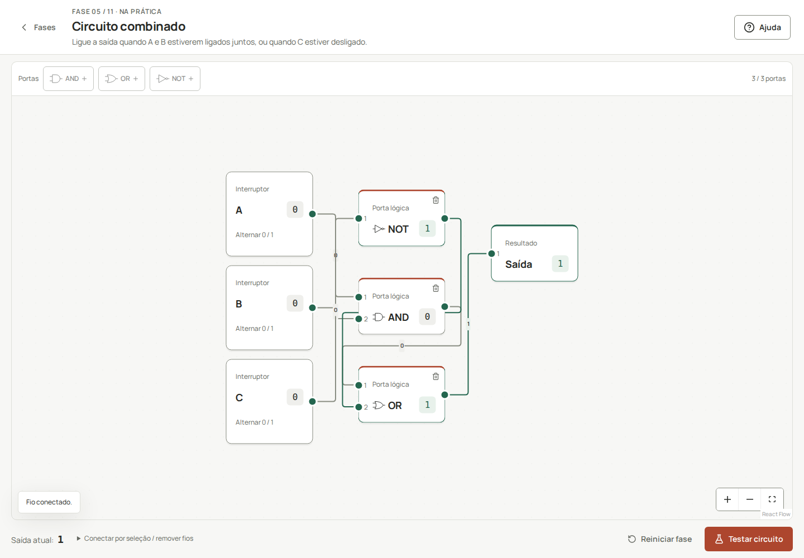
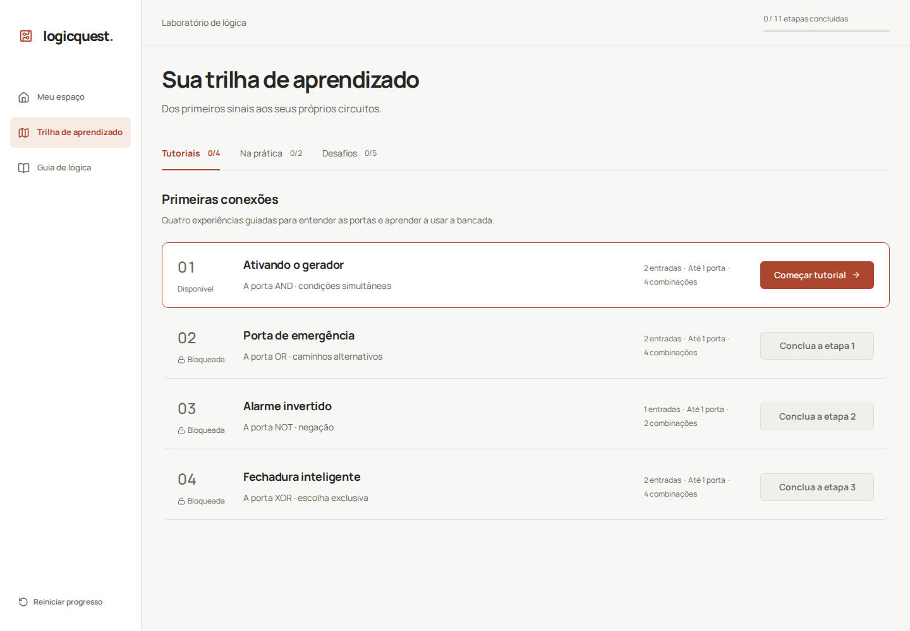
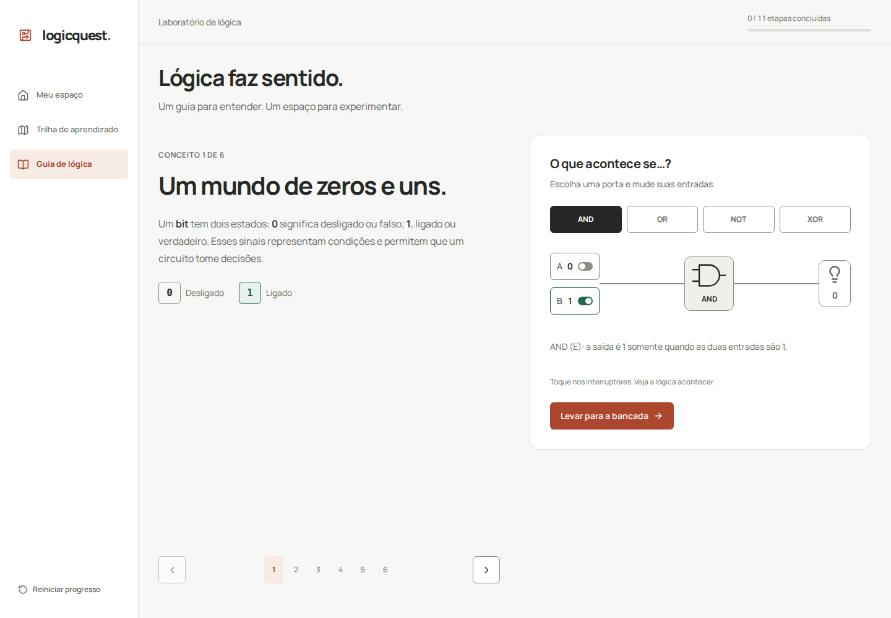

Explicação
Apresentar o conceito e a regra de cada porta.
O Laboratório de Circuitos
Desenvolvimento de um jogo educativo
para a prática de lógica digital.
Contextualização
A lógica digital combina sinais para produzir uma saída.
O projeto explora quatro portas lógicas em circuitos combinacionais.
Público proposto: estudantes iniciantes em lógica digital.
Contextualização
Complementar o estudo das tabelas-verdade com a construção de circuitos.
Apresentar o conceito e a regra de cada porta.
Alterar entradas e acompanhar os sinais na interface.
Aplicar o conteúdo em problemas progressivos.
Motivação do projeto: hipótese ainda não avaliada em pesquisa com estudantes.
Objetivos
Desenvolver um jogo educativo para explorar lógica digital pela montagem, simulação e validação de circuitos.
A → B → SApresentar AND, OR, NOT e XOR.
Permitir a construção e a simulação de circuitos.
Verificar soluções e orientar a correção de erros.
Tecnologias
Interface e organização do código.
Execução no desenvolvimento e geração da versão de distribuição.
Editor visual de portas e conexões.
Estilização e adaptação da interface.
Progresso salvo no navegador.
Testes das regras e das interações.
Desenvolvimento
Objetivos, requisitos e regras das etapas.
Motor lógico, editor visual e validação.
Conteúdo educativo, progressão e armazenamento.
Testes, revisão da interface e documentação.
Módulos separados para facilitar a organização e a manutenção.
Desenvolvimento
Selecionar a etapa e ler a missão.
Adicionar portas e conectar os componentes.
Alterar as entradas e simular.
Testar o circuito e consultar o resultado.
4 entradas = 16 combinações
verificadas na validação.

Resultados
11 etapas
de aprendizado progressivo


Guia interativo e progresso local. Interface adaptada para computador e celular.
Resultados
Portas, circuitos, etapas e progresso.
Montagem e aprovação das soluções.
✓ Checagem de tipos
✓ Análise de código
✓ Versão de distribuição
Funcionamento confirmado nos cenários testados.
Registro de 03/11/2026. A revisão anterior de interface está documentada em docs/redesign.md.
Encerramento
Um jogo funcional para montar, simular e validar circuitos lógicos.
Objetivos de implementação atendidos na versão entregue.
Conteúdo educativo, prática progressiva e retorno sobre os erros integrados.
Obrigado
pela atenção.
Fernando Buligon